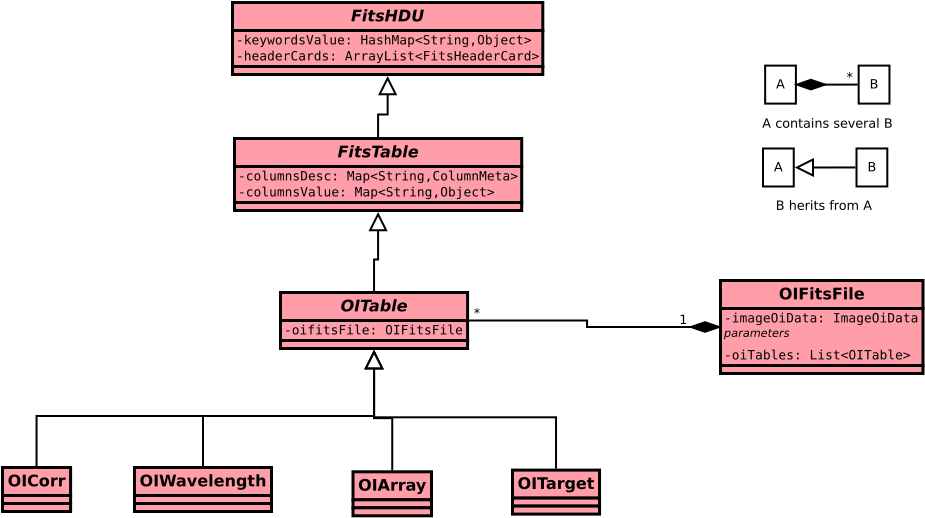

The FitsHDU contains the keywords.
The FitsTable (also abstract) contains the descriptions of the columns of a Fits binary table.
The OITable references the parent OIFitsFile. Indeed an OITable belongs to exactly one OIFitsFile, and an OIFitsFile contains several OITable.
The OICorr, OIWavelength, OIArray, and OITarget are concrete final classes containing the different binary tables in OI. Each one define its own keywords.